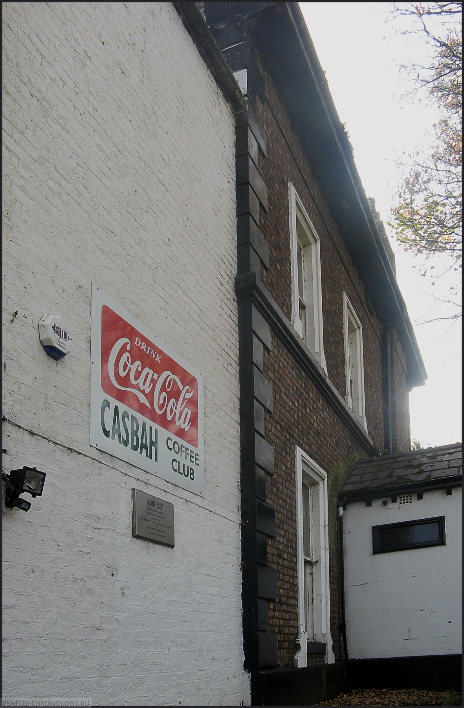
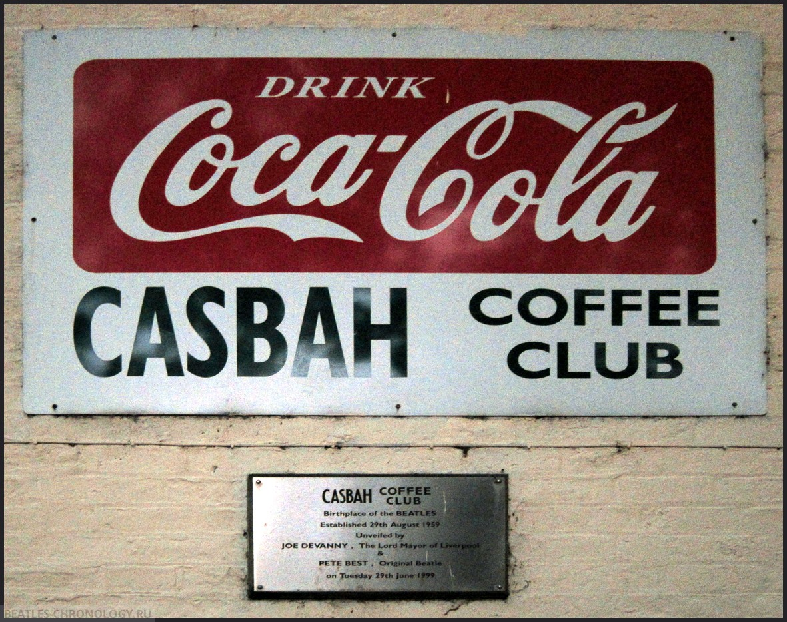
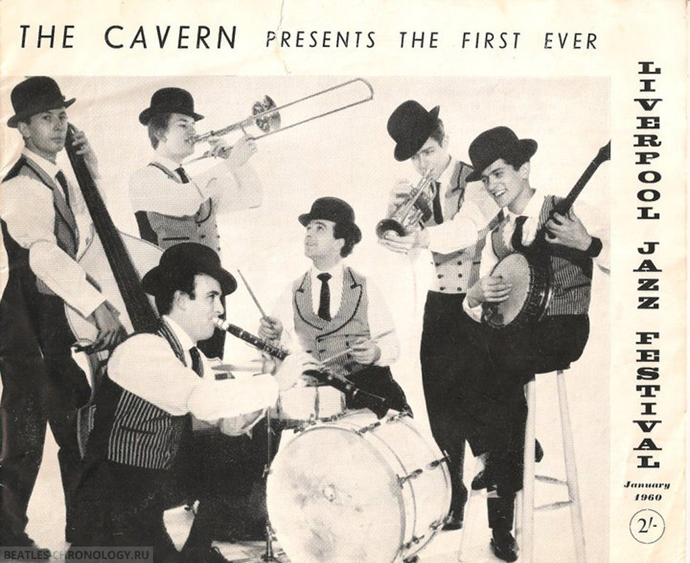
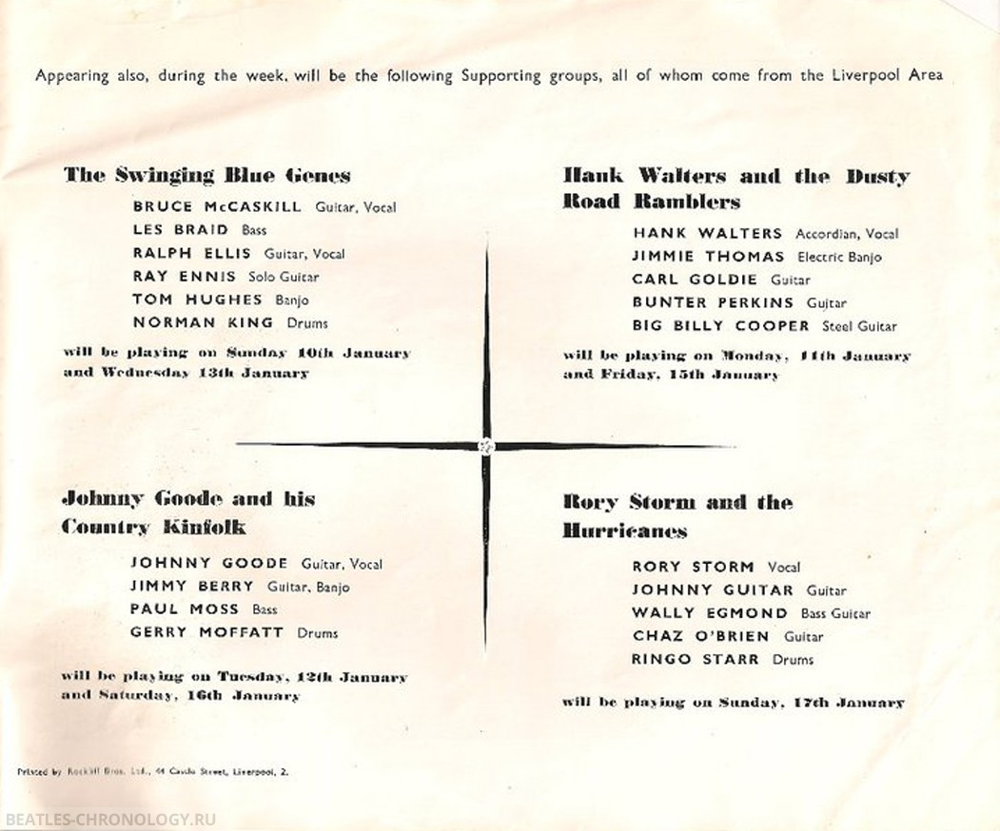

Bruno Ceriotti (historiador): "En este día, el grupo Rory Storm And The Hurricanes actúa en el Holyoake Hall (Smithdown Road, Liverpool, Merseyside), luego en el Cavern Club. La formación de la banda incluía a Al Caldwell (también conocido como Rory Storm), Johnny Byrne (también conocido como Johnny "Guitar"), Ty Bryan, Walter "Wally" Amond (también conocido como Lou Walters) y Richard Starkey (también conocido como Ringo Starr). También actuó la Cy Laurie Jazz Band.
Del diario de Johnny Guitar (guitarrista de Rory Storm and the Hurricanes): "Fui a Hollyoake, luego a Cavern, luego volví a Hollyoake".
Del diario de Johnny Guitar (guitarrista de Rory Storm and the Hurricanes): "Casbah Club. Vuelta en el último autobús."
 Bruno Ceriotti (historiador): "En este día, Rory Storm And The Hurricanes actúan en The Jive Hive (St. Luke's Hall, Crosby)".
Del diario de Johnny Guitar (guitarrista de Rory Storm and the Hurricanes): "Jive Hive, tocamos bien. Niebla, llegamos tarde, Martin casi se vuelve loco."
Bruno Ceriotti (historiador): "En este día, Rory Storm And The Hurricanes actúan en Chez Jazrock, Liverpool".
Del diario de Johnny Guitar (guitarrista de Rory Storm and the Hurricanes): "No jazz rock. No hubo música, bailes cancelados. Le escribimos a Butlin."
Bruno Ceriotti (historiador): "En este día, Rory Storm And The Hurricanes actúan en el Cambridge Hall, Southport".
Del diario de Johnny Guitar (guitarrista de Rory Storm and the Hurricanes): "Lo pasamos bien en Southport, sin peleas".
Bruno Ceriotti (historiador): "En este día, el grupo Rory Storm And The Hurricanes actúa en The Jive Hive (St. Luke's Hall, Crosby), luego en el Cavern Club. La formación de la banda incluía a Al Caldwell (también conocido como Rory Storm), Johnny Byrne (también conocido como Johnny "Guitar"), Ty Bryan, Walter "Wally" Amond (también conocido como Lou Walters) y Richard Starkey (también conocido como Ringo Starr)."
Del diario de Johnny Guitar (guitarrista de Rory Storm and the Hurricanes): "Las chicas vinieron a Jive Hive, las llevaron a The Cavern. Buenas chicas, Carol y Leslie. Regresamos en taxi al Jive Hive. Escribió a Middleton Towers, campamento de vacaciones Douglas.
John Whelan (beatles.ncf.ca): "La primera noche del festival inaugural de jazz de Liverpool en el Cavern Club, que se desarrollará durante la próxima semana. El evento comenzó ese día con la actuación de la Paramount Jazz Band del Sr. Acker Bilk. nota – El grupo “Rory Storm and the Hurricanes” actuará en el festival el 17 de enero.
Del diario de Johnny Guitar (guitarrista de Rory Storm and the Hurricanes): "[Club] Casbah, no hubo problema, tocamos bien".
 Del diario de Johnny Guitar (guitarrista de Rory Storm and the Hurricanes): "Fui a Cavern - jazz moderno - terrible. Antes de las 12 fui a Pack of Cards, y luego al Barrio Latino a ver a Cass and the Cassanovas (no está mal, solo un trío).
Bruno Ceriotti (historiador): "En este día, Rory Storm And The Hurricanes actúan en el Cambridge Hall, Southport".
Del diario de Johnny Guitar (guitarrista de Rory Storm and the Hurricanes): "Southport."
Bruno Ceriotti (historiador): "En este día, Rory Storm And The Hurricanes actúan en The Jive Hive (St. Luke's Hall, Crosby)".
Del diario de Johnny Guitar (guitarrista de Rory Storm and the Hurricanes): "Jive Hive."
Bruno Ceriotti (historiador): "En este día, Rory Storm And The Hurricanes actúan en el Cavern Club como parte del primer Festival de Jazz de Liverpool. La formación de la banda incluía a Al Caldwell (también conocido como Rory Storm), Johnny Byrne (también conocido como Johnny "Guitar"), Ty Bryan, Walter "Wally" Amond (también conocido como Lou Walters) y Richard Starkey (también conocido como Ringo Starr). También actuaron The Swinging Blue Jeans y The Mickey Ashman Band. Luego la banda actuó en el Corinthian (Seel Street en Slater Street, Liverpool, Merseyside).
Del diario de Johnny Guitar (guitarrista de Rory Storm and the Hurricanes): "Fui a The Cavern temprano. Tocamos bien. Tocamos en el Corinthian hasta la una de la mañana."
Bruno Ceriotti (historiador): “Ese día, el grupo Rory Storm And The Hurricanes debía actuar en la Universidad de Liverpool (Liverpool, Merseyside). La formación de la banda incluía a Al Caldwell (también conocido como Rory Storm), Johnny Byrne (también conocido como Johnny "Guitar"), Ty Bryan, Walter "Wally" Amond (también conocido como Lou Walters) y Richard Starkey (también conocido como Ringo Starr).
Del diario de Johnny Guitar (guitarrista de Rory Storm and the Hurricanes): "Universidad. Cancelado porque no se vendieron entradas. Fui al Carlton para ver a Jack el Destripador. Nieve".
Del diario de Johnny Guitar (guitarrista de Rory Storm and the Hurricanes): "Fui a The Cavern a cobrar. El jazz moderno, terrible. Recibí un montón de programas del festival."
Bruno Ceriotti (historiador): "En este día, Rory Storm And The Hurricanes actúan en el Cambridge Hall, Southport. La formación de la banda incluía a Al Caldwell (también conocido como Rory Storm), Johnny Byrne (también conocido como Johnny "Guitar"), Ty Bryan, Walter "Wally" Amond (también conocido como Lou Walters) y Richard Starkey (también conocido como Ringo Starr)."
Del diario de Johnny Guitar (guitarrista de Rory Storm and the Hurricanes): "Adrian, Don, Al y yo fuimos a Manchester para la audición. No tocamos tan mal. Estábamos rodeados por nueve chicas en el vestuario."
Bruno Ceriotti (historiador): "En este día, Rory Storm And The Hurricanes actúan en el Cambridge Hall, Southport. La formación de la banda incluía a Al Caldwell (también conocido como Rory Storm), Johnny Byrne (también conocido como Johnny "Guitar"), Ty Bryan, Walter "Wally" Amond (también conocido como Lou Walters) y Richard Starkey (también conocido como Ringo Starr)."
Del diario de Johnny Guitar (guitarrista de Rory Storm and the Hurricanes): "Llegué tarde a Southport, descansé en el escenario".
Bruno Ceriotti (historiador): "Ese día, el grupo Rory Storm And The Hurricanes actuó en el Club Casbah. La formación de la banda incluía a Al Caldwell (alias Rory Storm), Johnny Byrne (alias Johnny "Guitar"), Ty Bryan, Walter "Wally" Amond (alias Lou Walters) y Richard Starkey (alias Ringo Starr)."
Del diario de Johnny Guitar (guitarrista de Rory Storm and the Hurricanes): "Casbah. Tocamos bien. Había más de doscientas personas."
Bruno Ceriotti (historiador): "Por la noche, el grupo «Rory Storm and the Hurricanes» se presenta en el club «Cavern». También actuaron The Swinging Blue Jeans y la Sonny Morris Jazz Band. El presentador de la velada es Bob Wooler."
Bruno Ceriotti (historiador): "En este día, el grupo Rory Storm And The Hurricanes actúa en el Jive Hive (St. Luke's Hall, Crosby). La formación de la banda incluía a Al Caldwell (también conocido como Rory Storm), Johnny Byrne (también conocido como Johnny "Guitar"), Ty Bryan, Walter "Wally" Amond (también conocido como Lou Walters) y Richard Starkey (también conocido como Ringo Starr)."
Del diario de Johnny "Guitar" (Rory Storm and the Hurricanes): "Jive Hive, tocamos bien."
Bruno Ceriotti (historiador): "En este día, Rory Storm And The Hurricanes actúan en el Cambridge Hall, Southport. La formación de la banda incluía a Al Caldwell (también conocido como Rory Storm), Johnny Byrne (también conocido como Johnny "Guitar"), Ty Bryan, Walter "Wally" Amond (también conocido como Lou Walters) y Richard Starkey (también conocido como Ringo Starr)."
Del diario de Johnny Guitar (guitarrista de Rory Storm and the Hurricanes): "Southport. Tocamos pésimo."
Bruno Ceriotti (historiador): "Un día como hoy, la banda Rory Storm And The Hurricanes actuó en el Holyoake Hall (Smithdown Road, Liverpool, Merseyside). La formación de la banda incluía a Al Caldwell (alias Rory Storm), Johnny Byrne (alias Johnny "Guitar"), Ty Bryan, Walter "Wally" Amond (alias Lou Walters) y Richard Starkey (alias Ringo Starr). Luego una actuación en el Jive Hive (St. Luke's Hall, Derby)."
Del diario de Johnny Guitar (guitarrista de Rory Storm and the Hurricanes): "Tocamos bien en Holyak. Llegamos a Jive Hive 30 minutos tarde y perdimos £2".